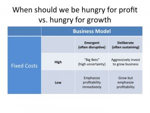

Good Money and Bad Money, Nick Fiore at metals conglomerate (BSSE, Monday, Week 9)
building-and-sustaining-successful-enterprisesyear-twoNew ventures should be hungry for profit, not hungry for growth. Don't invest for growth until you've nailed your profit formula.

{kind=link}
So what about Google acquisitions/growth investments (YouTube, setting up 100 on-demand channels, etc.).
If you think they can easily incorporate these into existing business model, they make a ton of sense (top-right).
If you think they are emergent opportunities that don't fit into existing profit formula, they may be foolish (top-left).
Managing "by the numbers" => most GMs forced to view every decision through lens of short-term profitability. Revenue drops; all fixed costs like labor become a higher percentage of revenue => need to do layoffs.
Managers tread thin line between keeping profitability within acceptable tolerances and planning for revenue growth in the future. If we cut too deep, we may have trouble recovering when macroeconomic conditions (or our technology, or whatever) improve...
Suggestions: make fixed costs into variable costs (contract labor). Don't mix dissimilar business models in the same organization; enables profitable biz models to "cover up" losses in unprofitable biz models.
Common big company formula: "Leash" to invest in new growth initiatives only has slack while the company is making profits. When the core fails, firms' instinct is to cut non-core businesses and retrench around proven core, EVEN THOUGH new growth initiatives will be key to making profits in the future.
Thus, new growth businesses in big companies need to be hungry for profit before being hungry for growth. Otherwise, they'll get cut in a downturn.